写真でふり返るさいたまの生協 2014
ことし一年間の活動を「写真ニュース」（NO.50－53）でふり返ります。
2月
2月雪害で被害を受けた県内産地を支援
2月の記録的な降雪により、県内の産地では作物被害ばかりではなく、ビニールハウスなどの農業用施設も大きな被害を受けました。県内の生協は、被害を受けた産地の一日も早い復興を願い、取引産地への職員の派遣やお見舞金を贈呈するなど、支援活動をおこないました。
コープネットグループは、3月にJA甘楽富岡（群馬県富岡市）に述べ50人の職員を派遣したほか、パルシステム埼玉、東都生協も、埼玉県北部を中心に、提携産地でのビニールハウスの撤去等の作業、生活クラブも坂戸農場の倒壊鶏舎の撤去作業にあたりました。
（NO.51 2014夏号）
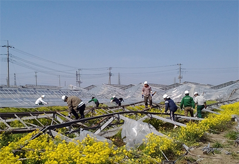
農家の皆さんに励ましのメッセージ
2月雪害で県内の農家に甚大な被害が発生したことから、JA産地の皆さんにお見舞や励ましを伝えようと、生協ネットワーク協議会が組合員に呼びかけました。組合員の思いが詰まったメッセージカードを埼玉県農業協同組合中央会を通じてJA埼玉県女性組織協議会にお届けしました。
（NO.50 2014春号）
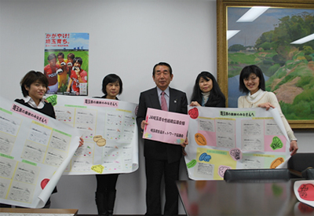
5月
「現場の方から聞く これからの医療・介護」
10月の第50回埼玉県消費者大会を前に、第1回プレ学習会が与野本町コミュニティセンターでおこなわれました。150人が参加し、2015年介護保険法改正を前に、これからの医療と介護を考えました。
（NO.51 2014 夏号）
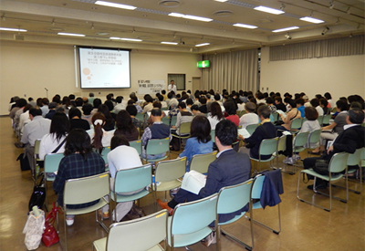
6月
地域で自立した消費者活動推進へ、県内の消費者団体が交流
第1回消費者団体交流会が埼玉会館（さいたま市）で開かれ、県内19消費者団体47人が参加しました。地域での消費者行政充実と連携が課題となっている中、埼玉弁護士会前会長の池本誠司弁護士が、市町村消費者行政の機能と地域体制づくりの課題について講演し、グループで交流しました。
（NO.51 2014夏号）
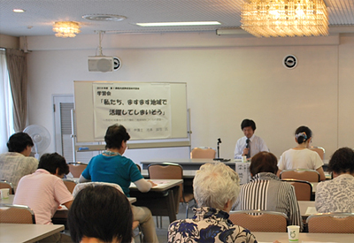
7月
核兵器のない平和な社会に 第29回埼玉県原爆死没者慰霊式
広島、長崎の原爆被爆から69年目の夏を迎え、第29回埼玉県原爆死没者慰霊式（埼玉県原爆被害者協議会主催・後援 埼玉県、さいたま市、さいたま市教育委員会）が、さいたま市南区の市営別所沼公園で開かれました。被爆者やご遺族、県内の首長、各党議員、実行委員会団体等から約250人が参列しました。
（NO.52 2014秋号）
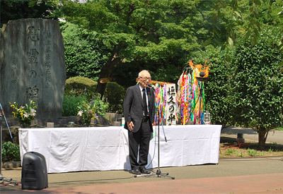
8月
福島の子ども保養プロジェクト 2014コヨットin埼玉を開催
8月18日から三日間、埼玉県生協連と埼玉県ユニセフ協会の共催で、「2014 コヨットin埼玉（福島の子ども保養プロジェクト）」を飯能市の埼玉県立名栗げんきプラザで開催しました。
今年は、福島に住む子供たち22人が夏休みのひと時を元気に過ごしました。
福島の子ども保養プロジェクトは、2011年からこれまでに全国で累計6万4,205人の子どもたちや保護者が参加しています。埼玉でも一昨年から取り組みをすすめ、今回で三回目の取り組みとなりました。
| 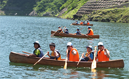 | 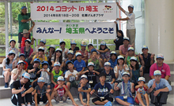 |
首都圏9都県市合同防災訓練に参加
首都圏9都県市合同防災訓練に位置づけられた埼玉県と草加市による総合防災訓練が、草加市の綾瀬川左岸広場を中央会場におこなわれました。消防、警察、自衛隊、医療機関など156団体と市民約4500人が参加した今回の防災訓練に、5生協の役職員、組合員と県生協連あわせて21人が参加しました。
（NO.52 2014秋号）
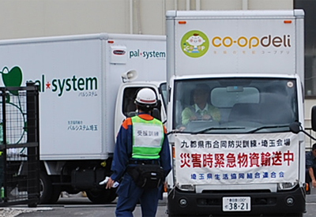
9月
JA全農さいたまと埼玉県生協連・協同組合間提携
2014年度「体験稲刈り&田んぼの生きもの調査」
全国農業協同組合連合会埼玉県本部（JA全農さいたま）と埼玉県生活協同組合連合会の主催で、今年度協同組合間提携企画「体験稲刈り&田んぼの生きもの調査」が、杉戸町の高野農村センターと隣接するほ場でおこなわれました。当日は、生協組合員など26家族81人が参加し、楽しい一日を過ごしました。
（NO.52 2014秋号）

10月
50年の歩みを確信に 平和で安心してくらせる社会をめざして 第50回埼玉県消費者大会
第50回埼玉県消費者大会（大会実行委員会主催・埼玉県後援）が埼玉会館で開催され、1200人が参加しました。1965年の「埼玉中央婦人大会」からこれまでの歩みの映像上映で始まり、来賓の上田清司知事の挨拶、ノーベル賞の大江健三郎さんが｢私の人生を貫いているもの｣と題して講演されました。午後は、5つの分科会に約600人が参加し、50回にふさわしい活発な大会となりました。
（NO.53 2015冬号）
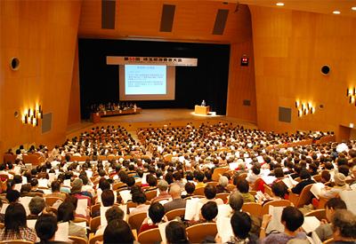
11月
原発再稼働にNO！2014さよなら原発埼玉県民集会
「2014さよなら原発埼玉県民集会」（さよなら原発埼玉県民集会実行委員会主催）がさいたま市の埼玉会館で開催され、800人が参加しました。原発再稼働の動きが強まる中、脱原発弁護団全国連絡会共同代表の海渡 雄一弁護士が「大飯原発差止め判決の意義」を講演、秩父市で脱原発運動に取り組むダニー・ネフセタイさんなど地域での取り組みが報告されました。
（NO.53 2015冬号）
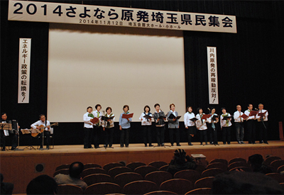
介護保険制度改定・新しい地域支援事業で行政と懇談
介護保険制度改定・市町村による新しい地域支援事業の創設を前に、埼玉県との懇談をおこないました。県より、介護をめぐる現状と地域包括ケアシステムの構築について説明いただき、生協からは、生協の概要と福祉事業・助け合い活動の取り組みの現状を報告し、懇談しました。
（NO.53 2015冬号）
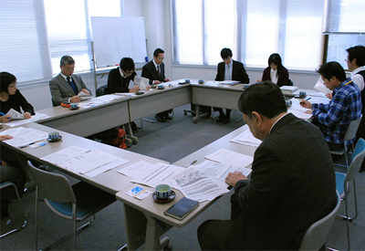